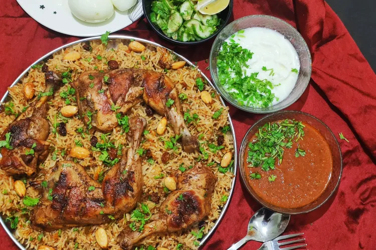

Kabsa Recipe

Al kabsa was the first Arabic dish I ever made. It turned out extremely
delicious and is a new favorite. Serve with fresh mixed cucumber, carrot,
lettuce, and tomato salad — preferably with a little lime vinaigrette.
Some fresh pita bread on the side would also be nice. Saudis like their
kabsa with a hot sauce called shattah. Enjoy!
Ingredients
Kabsa Spice Mix
- ½ teaspoon saffron
- ½ teaspoon ground cinnamon
- ½ teaspoon ground allspice
- ½ teaspoon dried whole lime powder
- ¼ teaspoon ground cardamom
- ¼ teaspoon ground white pepper
Kabsa Dish
- ¼ cup butter
- 1 onion, finely chopped
- 6 cloves garlic, minced
- 1 (3 pound) whole chicken, cut into 8 pieces
- ¼ cup tomato puree
- 1 (14.5 ounce) can diced tomatoes, undrained
- 3 carrots, peeled and grated
- 2 whole cloves
- 1 pinch ground nutmeg
- 1 pinch ground cumin
- 1 pinch ground coriander
- salt and freshly ground black pepper to taste
- 3 ¼ cups hot water, plus more if needed
- 1 cube chicken bouillon
- 2 ¼ cups unrinsed basmati rice
- ¼ cup raisins
- ¼ cup toasted slivered almonds